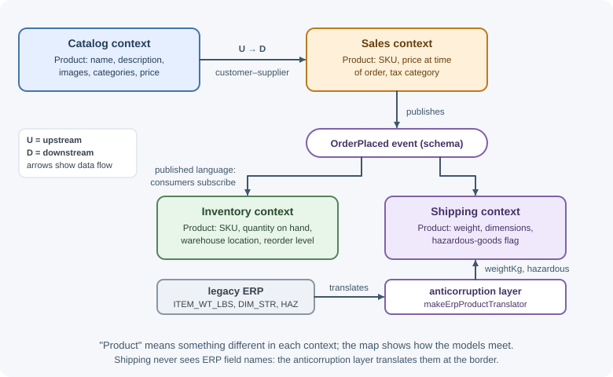
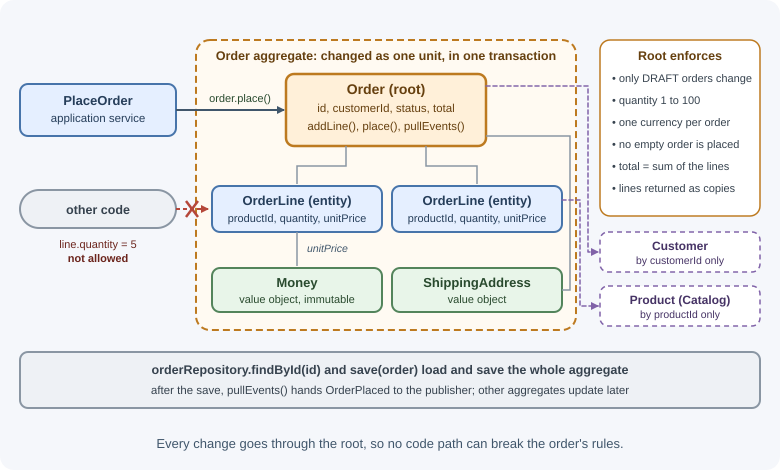

Domain-Driven Design¶
Domain-driven design (DDD), introduced by Eric Evans, is an approach to building software for complex business domains. It puts the business domain and its language at the center of the design, divides large systems into bounded contexts with clear boundaries, and offers building blocks—entities, value objects, aggregates, domain events—for modeling business rules in code.
Why it matters¶
The hardest part of many backends is not the technology but the business rules: when an order can be cancelled, how a refund interacts with a discount, what "active customer" means in billing versus marketing. When code does not reflect how the business thinks, every change requires translation and creates bugs. DDD gives teams a way to discover the domain with experts, express it directly in code, and draw service or module boundaries that match the business—the boundaries that matter most when choosing between a modular monolith and microservices.
Real-world usage¶
- Shopify — boundaries from business concepts. When modularizing its monolith, Shopify reorganized code from software concepts (models, views, controllers) to real-world concepts "like orders, shipping, inventory, and billing," drawing up the list with input from stakeholders across the company (Shopify Engineering).
- Uber — domains over microservices. Uber's Domain-Oriented Microservice Architecture groups services into domains behind gateways and says it "draws heavily" from domain-driven design and clean architecture (Uber Engineering).
- Microsoft — tactical DDD in a reference application. Microsoft's eShopOnContainers sample implements its Ordering microservice with DDD layers and aggregates whose rules run through a single aggregate root (Microsoft Learn).
How it works¶
DDD has two halves:
- Strategic design: understanding the domain, dividing it into parts, and defining boundaries and relationships between them.
- Tactical design: patterns for modeling one part in code.
Strategic design is the more valuable half; tactical patterns are useful only inside well-chosen boundaries.
Domain and subdomains¶
The domain is the area of business the software serves, such as online retail. It divides into subdomains:
| Subdomain type | Description | Retail example | Investment |
|---|---|---|---|
| Core | What gives the business its competitive advantage | Pricing and personalized recommendations | Best developers, custom code, careful modeling |
| Supporting | Necessary and specific to the business, but not a differentiator | Order fulfillment workflow | Custom but simpler code |
| Generic | Solved problems common to many businesses | Authentication, payments, email | Buy or use existing services |
This classification tells you where to spend design effort: deep DDD modeling for the core, off-the-shelf solutions for generic subdomains.
Ubiquitous language¶
A ubiquitous language is a shared vocabulary that developers and domain
experts use in conversations, documents, and the code itself. If
warehouse staff say "pick list" and "short-ship," the code has PickList
and shortShip(), not TaskBatch and partialProcess().
- Terms are precise: "order placed" and "order confirmed" are different events if the business treats them differently.
- When a conversation reveals that a term is ambiguous, the model and code change.
- The language is valid within one bounded context; another context may use the same word with a different meaning.
Bounded contexts¶
A bounded context is an explicit boundary within which one model and its language apply consistently. Large domains cannot share one model: "Product" means different things to different parts of a business.
┌──────── Catalog context ────────┐ ┌──────── Inventory context ───────┐
│ Product: name, description, │ │ Product: SKU, quantity on hand, │
│ images, categories, price │ │ warehouse location, reorder level│
└─────────────────────────────────┘ └──────────────────────────────────┘
┌──────── Sales context ──────────┐ ┌──────── Shipping context ────────┐
│ Product: SKU, price at time of │ │ Product: weight, dimensions, │
│ order, tax category │ │ hazardous-goods flag │
└─────────────────────────────────┘ └──────────────────────────────────┘
Each context has its own model, owned by one team, usually with its own data. Bounded contexts are the natural candidates for modules in a modular monolith or for microservices.
Context maps¶
A context map documents how bounded contexts relate. Common relationships:
| Relationship | Meaning |
|---|---|
| Partnership | Two teams coordinate closely and succeed or fail together. |
| Shared kernel | Two contexts share a small, jointly owned part of the model (for example, a Money type). Changes need agreement from both. |
| Customer–supplier | The upstream (supplier) context provides what the downstream (customer) needs; the downstream's needs influence the upstream's plans. |
| Conformist | The downstream simply adopts the upstream's model, with no influence over it. |
| Anticorruption layer (ACL) | The downstream translates the upstream's model into its own, protecting its model from foreign concepts. |
| Open host service | The upstream offers a well-defined protocol or API for many consumers. |
| Published language | A documented shared format for exchanging information, such as an event schema. |
The anticorruption layer is especially important when integrating with legacy systems or third-party APIs:
// Shipping context's ACL over a legacy ERP API
export function makeErpProductTranslator(erpClient) {
return {
async getShippingProfile(sku) {
const raw = await erpClient.fetchItem(sku); // { ITEM_WT_LBS, DIM_STR: "10x4x2", HAZ: "Y" }
const [length, width, height] = raw.DIM_STR.split("x").map(Number);
return {
sku,
weightKg: raw.ITEM_WT_LBS * 0.4536,
dimensionsCm: { length: length * 2.54, width: width * 2.54, height: height * 2.54 },
hazardous: raw.HAZ === "Y",
};
},
};
}
The rest of the shipping code works with weightKg and hazardous, never
with the ERP's field names.

Entities and value objects¶
Entities have an identity that continues over time even as their attributes change. Two customers with the same name are different customers; an order is the same order after its status changes.
Value objects have no identity; they are defined entirely by their
values and are immutable. Two Money objects of 10.00 USD are
interchangeable. Examples: money, an address, a date range, an email
address.
// Value object: immutable, compared by value, validates itself
export function money(amountCents, currency) {
if (!Number.isInteger(amountCents)) throw new TypeError("amountCents must be an integer");
if (!/^[A-Z]{3}$/.test(currency)) throw new TypeError("Invalid currency");
return Object.freeze({ amountCents, currency });
}
export function addMoney(a, b) {
if (a.currency !== b.currency) throw new Error("Currency mismatch");
return money(a.amountCents + b.amountCents, a.currency);
}
export const moneyEquals = (a, b) =>
a.amountCents === b.amountCents && a.currency === b.currency;
Using value objects instead of raw numbers and strings ("primitive obsession") puts validation and behavior in one place and makes invalid values impossible to construct.
Aggregates, aggregate roots, and invariants¶
An invariant is a business rule that must always be true, such as "an order's total equals the sum of its lines" or "a submitted order cannot be changed."
An aggregate is a cluster of entities and value objects treated as one unit for changes, so its invariants can be enforced together. One entity is the aggregate root: the only object outside code may hold a reference to or call. All changes go through the root.

Rules for designing aggregates:
- Protect invariants inside the boundary; that is the aggregate's purpose.
- Keep aggregates small. Large aggregates cause contention and slow loads.
- Reference other aggregates by ID, not by object (an order stores
customerId, not aCustomerobject). - One aggregate per transaction. Changes to other aggregates happen through domain events and are eventually consistent.
- Load and save whole aggregates through a repository.
Domain events¶
A domain event records something meaningful that happened in the
domain, named in the past tense with the ubiquitous language: OrderPlaced,
PaymentFailed, ItemShipped. Other parts of the system react to them—
sending emails, reserving stock, updating read models—without the aggregate
knowing who listens.
Domain events also connect aggregates and bounded contexts while respecting the "one aggregate per transaction" rule. Publishing them reliably across services uses the transactional outbox pattern; see also event-driven architecture.
Repositories¶
In DDD, a repository provides access to aggregates as if they were an
in-memory collection: orderRepository.findById(id),
orderRepository.save(order). There is one repository per aggregate
root, not per table or entity; you never fetch an OrderLine on its own.
Domain services and application services¶
- Domain services hold domain logic that does not naturally belong to
one entity or value object, often because it involves several aggregates
or a domain policy—for example, a
PricingServicethat applies promotions across a cart. They speak the ubiquitous language and contain no infrastructure code. - Application services coordinate a use case: load aggregates through repositories, call domain methods, save, and publish events. They handle transactions and security but contain no business rules.
HTTP controller → Application service (use case: PlaceOrder)
├─ loads Customer, Cart via repositories
├─ calls PricingService (domain service)
├─ calls Order.place(...) (aggregate enforces invariants)
├─ saves Order via repository
└─ publishes OrderPlaced (domain event)
When to use and when not to use¶
Use DDD when:
- The business rules are the hard part, and experts are available to explain them.
- Several teams or modules use the same words with different meanings.
- You are drawing module or service boundaries and want them to follow the business.
Use less of it when:
- An area is simple CRUD with few rules; a plain data model is clearer.
- The subdomain is generic (authentication, email, payments); buy or reuse instead of modeling.
- Nobody with domain knowledge is available; you cannot build a ubiquitous language alone.
| Situation | Simple CRUD model | Strategic DDD only | Strategic + tactical DDD |
|---|---|---|---|
| Admin screens over reference data | Good fit | Not needed | Overkill |
| Many teams, one tangled "Customer" model | Breaks down | Good fit | Add where rules are rich |
| Core subdomain with complex rules | Rules scatter | Helps boundaries | Best fit |
| Integrating a legacy system | Leaks its model | ACL and context map | Same, plus rich model inside |
| Generic subdomain | Use a product | Mark it generic | Not worth it |
Practical examples¶
A worked order aggregate¶
// domain/order.js
import { money, addMoney } from "./money.js";
export class Order {
#lines = [];
#status = "DRAFT";
#events = [];
constructor({ id, customerId, currency }) {
this.id = id;
this.customerId = customerId; // reference another aggregate by ID
this.currency = currency;
}
addLine(productId, quantity, unitPrice) {
if (this.#status !== "DRAFT") throw new Error("Only draft orders can change");
const existing = this.#lines.find((l) => l.productId === productId);
const newQuantity = (existing?.quantity ?? 0) + quantity; // check the merged line
if (!Number.isInteger(quantity) || quantity < 1 || newQuantity > 100) {
throw new Error("Quantity must be between 1 and 100");
}
if (unitPrice.currency !== this.currency) throw new Error("Currency mismatch");
if (existing) existing.quantity = newQuantity;
else this.#lines.push({ productId, quantity, unitPrice });
}
get total() {
return this.#lines.reduce(
(sum, l) => addMoney(sum, money(l.unitPrice.amountCents * l.quantity, this.currency)),
money(0, this.currency),
);
}
place(now) {
if (this.#status !== "DRAFT") throw new Error("Order already placed");
if (this.#lines.length === 0) throw new Error("Cannot place an empty order");
this.#status = "PLACED";
this.#events.push({
type: "OrderPlaced",
orderId: this.id,
customerId: this.customerId,
total: this.total,
occurredAt: now.toISOString(),
});
}
get status() { return this.#status; }
get lines() { return this.#lines.map((l) => ({ ...l })); } // copies: no outside mutation
pullEvents() {
const events = this.#events;
this.#events = [];
return events;
}
}
The application service¶
// application/place-order.js
export function makePlaceOrder({ orderRepository, eventPublisher, clock }) {
return async function placeOrder(orderId) {
const order = await orderRepository.findById(orderId);
if (!order) throw new NotFoundError("Order");
order.place(clock.now()); // business rules live in the aggregate
await orderRepository.save(order); // one aggregate per transaction
await eventPublisher.publishAll(order.pullEvents());
return { id: order.id, status: order.status, total: order.total };
};
}
The aggregate guarantees that no code path can place an empty order, change
a placed order, or mix currencies. Other contexts—inventory, email,
analytics—react to OrderPlaced.
Strategic versus tactical DDD¶
| Strategic DDD | Tactical DDD |
|---|---|
| Subdomains (core, supporting, generic) | Entities and value objects |
| Ubiquitous language | Aggregates and invariants |
| Bounded contexts | Domain events |
| Context maps and integration patterns | Repositories |
| Team and service boundaries | Domain and application services |
Teams can benefit from strategic DDD even when they write simple code inside each context. Applying tactical patterns without strategic boundaries usually produces elaborate code in the wrong places.
Best practices¶
- Work with domain experts; listen for terms, rules, and edge cases, and reflect them in the code.
- Invest modeling effort in the core subdomain; buy or reuse generic ones.
- Make bounded contexts explicit and give each an owner.
- Use anticorruption layers when integrating with legacy or external models.
- Prefer value objects over primitives for domain concepts.
- Keep aggregates small, reference others by ID, and change one per transaction.
- Keep business rules in entities, value objects, and domain services—not in controllers or application services.
- Don't apply DDD to simple CRUD areas where there are few rules.
In production¶
- Write conflicts on a hot aggregate. Symptom: saves fail with
version conflicts or time out under load. Detect: the conflict or
lock-wait rate is concentrated on one aggregate type. Cause: the
aggregate is too large (for example, a
Storeholding every order). Fix: split it into smaller aggregates that reference each other by ID. - An invariant that only some paths enforce. Symptom: data that breaks a rule, such as a line with 120 items when the limit is 100. Detect: data-quality queries or reports find impossible values. Cause: one code path (a merge, an admin script, a direct database update) skips the root's checks. Fix: route every change through the aggregate root and add database constraints as a backstop.
- Events lost between save and publish. Symptom: inventory or email never reacts to some placed orders. Detect: orders exist with no matching downstream record. Cause: the process crashed after saving the aggregate but before publishing its events. Fix: write events in the same transaction with a transactional outbox.
- One context's change breaks another. Symptom: a field rename in Catalog breaks Shipping. Detect: incidents that cross team boundaries after unrelated releases. Cause: contexts share a model instead of translating. Fix: an anticorruption layer or a versioned published language between them.
- The language drifts. Symptom: features built from a ticket do the wrong thing because "active customer" meant something else. Detect: recurring misunderstandings in reviews and support. Cause: code names no longer match how the business talks. Fix: keep a glossary per context and rename code when the language changes.
Important terminology¶
- Domain: The business area the software serves.
- Subdomain: A part of the domain: core, supporting, or generic.
- Ubiquitous language: Shared vocabulary used by experts and in code within a context.
- Bounded context: A boundary in which one model applies consistently.
- Context map: A description of relationships between bounded contexts.
- Anticorruption layer: A translation layer protecting a model from another model.
- Entity: An object with identity that persists over time.
- Value object: An immutable object defined by its values.
- Aggregate / aggregate root: A consistency boundary and its single entry point.
- Invariant: A rule that must always hold.
- Domain event: A record of something meaningful that happened in the domain.
- Domain service / application service: Domain logic across objects / coordination of a use case.
Common mistakes and misconceptions¶
- "DDD means using entities, repositories, and aggregates." The strategic part—language and boundaries—matters most.
- One giant model for the whole company, where "Customer" has hundreds of fields used differently everywhere.
- Anemic domain models: entities that are just data bags, with all rules in services.
- Huge aggregates that load half the database and conflict on every write.
- Holding object references across aggregates and changing several in one transaction.
- Using DDD for simple CRUD, adding ceremony without benefit.
Revision questions¶
- What are core, supporting, and generic subdomains, and how should investment differ between them?
- What is a bounded context, and why can "Product" mean different things in different contexts?
- When would you use an anticorruption layer?
- Explain the difference between entities and value objects with examples.
- What is an aggregate, and why should one transaction change only one?
- What belongs in an application service versus a domain service?